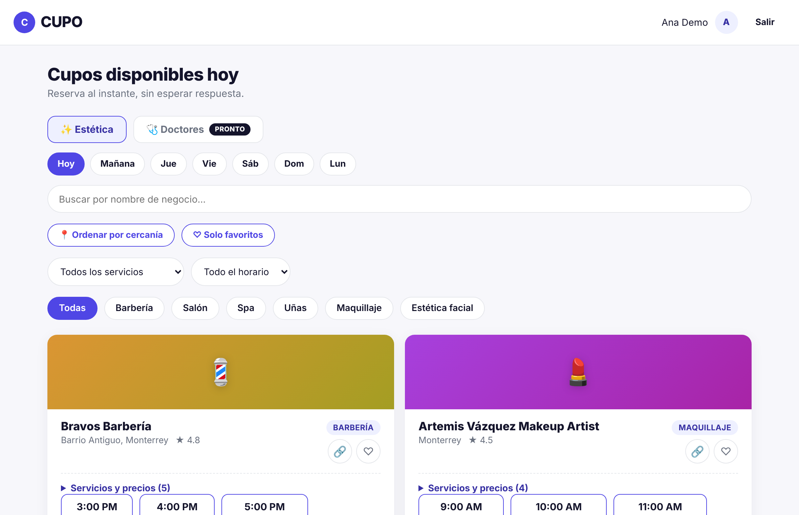

No dejes que una cancelación
se convierta en un hueco vacío
CUPO conecta a barberías, salones, spas y estéticas con clientes que buscan una cita ahora mismo, cerca de ellos.

Para clientes
Consulta en un solo lugar la disponibilidad real de negocios cerca de ti y reserva al instante, sin escribirle a cinco lugares por WhatsApp.
Ver cupos disponiblesPara negocios
Publica los huecos que deja una cancelación y vuelve a llenar tu agenda del día. Tú decides el precio y el horario.
Tengo un negocioCómo funciona
Tres pasos, sin intermediarios y sin esperar respuesta.
Ve la disponibilidad real
Explora barberías, salones, spas y estéticas con cupos libres hoy, ordenados por cercanía.
Reserva al instante
Elige el horario que te sirva y confirma tu lugar en segundos, sin esperar respuesta.
El negocio llena su agenda
Cada cancelación se convierte en una nueva oportunidad de ingreso para el negocio, el mismo día.
Reserva con confianza
Lo que hace a CUPO diferente de escribirle a cada negocio por WhatsApp.
Áreas disponibles
CUPO empieza en el área de Estética, con más áreas en camino.
✨ Estética
Barberías, salones, spas, uñas, maquillaje y estética facial — todo en un solo lugar.
🩺 Doctores Pronto
Citas médicas de último momento, cerca de ti. Muy pronto en CUPO.
Preguntas frecuentes
¿Necesito una cuenta para ver los cupos?
No. Puedes ver todos los cupos sin registrarte. La cuenta se pide hasta el momento de reservar, y al entrar regresas justo al cupo que elegiste.
¿Cuánto cuesta reservar?
Nada. Reservar en CUPO es gratis y no pedimos tarjeta: el pago se hace directamente en el negocio, por los medios que él acepte.
¿Cómo sé que mi cita está confirmada?
Al reservar recibes un folio (por ejemplo CUPO-AB12CD) y tu cita aparece en “Mis reservas” con la dirección, un botón para llegar en el mapa y otro para agregarla a tu calendario.
¿Puedo cancelar o cambiar mi cita?
Sí, desde “Mis reservas”, sin costo, hasta el límite de horas que define cada negocio (lo ves antes de confirmar). Para cambiarla, elige “Reagendar”: cancela esa cita y te muestra otros horarios del mismo negocio.
Tengo un negocio, ¿cómo publico mis cupos?
Crea tu cuenta de negocio, agrega tus servicios y define tu horario semanal una sola vez: los cupos se publican solos para las próximas semanas. Puedes cerrar días, agendar a mano a quien te llama y ver tus ventas.
¿Qué pasa con mis datos?
Los usamos solo para tu cuenta y tus reservas, y el negocio donde reservas ve tu nombre y teléfono para atenderte. No los vendemos. Lee el Aviso de privacidad.